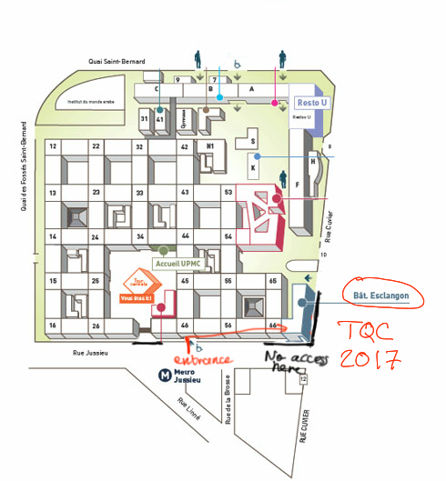

Conference venue
TQC 2017 is held at Université Pierre et Marie Curie2-4 Place Jussieu, 75005 Paris
Amphitheatre Durand in building Esclangon
Campus map
Please note that most entrances to the Jussieu campus are currently closed. The Esclangon building can easily be reached from the entrance indicated on the map. Campus location
Transportation
General transportation informations can be found on the website of RATP. The Jussieu campus of UPMC is accessible through:- Metro: Jussieu, line 10 and 7.
- RER: RER B station Saint-Michel Notre-Dame connects to line 10 station Cluny La Sorbonne
- Bus: Line 67 (Jussieu) stops at the front of the campus, lines 63 and 24 (Université Paris 6) stop at the Back, line 89 stops both at the front and the back, depending on which direction is your ride.
- Velib: Station 5023